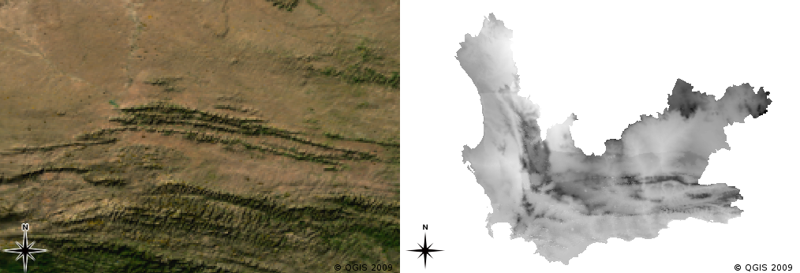

Geographic Information Systems for Public Policy - Lecture V
Raster Data Models
Sergio Rey
Last Time
- Vector Attributes
- Table Joins
- Virtual Layers
Today
- Raster Data Model
- Conversions
- Rasters in Public Policy/Social Sciences
Raster Data Model
- Rasters composed of a matrix of pixels (cells)
- Each pixel contains a value representing the conditions for the area covered by that pixel

Advantages of Rasters
- Representing continuous spatial variation
- More efficient than small polygons (in the vector model)

Georeferencing Rasters
- Defines the correspondence between each pixel and location on the earth’s surface
- Coordinates of top left pixel in the images
- Size of each pixel in X and Y direction
- Rotation angle
Raster in QGIS
Raster in QGIS

Sources of raster data
Remote Sensing Satellites

Remote Sensors

Planet
Earth Engine Timelapse
Remote Sensing Imagery Resolution
- Spatial Resolution
- Spectral Resolution
- Temporal Resultion
Spatial Resolution
How much area is represented in each pixel
- MODIS 500m x 500m
- SPOT5 satellites: 10m x 10m
- Areal Photography, drones: 50cm x 50cm
Remember: images with pixel size covering a small area are called high resolution images.
Spatial Resolution and Scale

|

|
Spectral Resolution
- The number of spectral bands in which a sensor can collect reflected radiance
- Choice depends upon application of use
- Different types of ground targets have different spectral signatures

Temporal Resolution
Revisit Periods for Satellites
- SPOT5 - 3 days
- Modis - daily
- Airborne - as needed
Conversions
Which Model?

Vector to raster conversion

Raster to vector conversion

Rasters in GIS for Public Policy
- Measures of environmental variables
- Risk surfaces
- Dasymetric mapping and areal interpolation
Environmental variables
Freeman et al. (2017) “Willingness to pay for clean air in China”

FEMA: Risk Surface
Dasymetric Mapping
NSF-Neighborhoods

Interpolation and Harmonization
Tobler
Tobler: Voting Precincts

Tobler: Dasymetric

National Land Cover Database

Next Up
- Coordinate Reference Systems

GIS for Public Policy’20 by Sergio Rey is licensed under a Creative Commons Attribution-ShareAlike 4.0 International License.